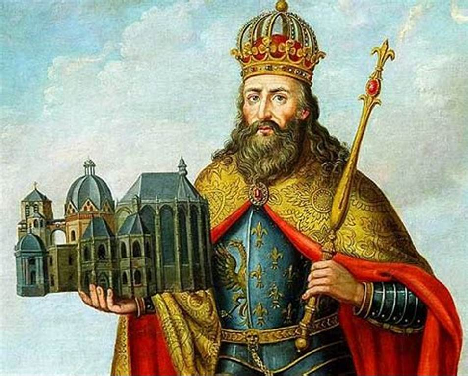
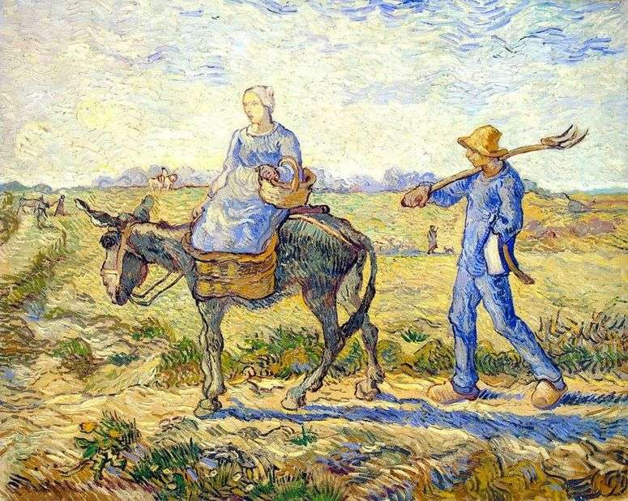

A Igreja Católica foi uma das instituições mais importantes e poderosas do período feudal. O papel da igreja nessa época ia além da função de evangelizar. Ela exercia uma forte influência na política e nas relações sociais. No período feudal, os membros mais elevados da igreja, como os bispos, viviam entres os nobres.
O feudalismo foi um sistema político, econômico e social que existiu na Europa Ocidental durante a Idade Média. Ficou marcado por uma sociedade estamental e pela dependência e exploração do solo. A sociedade feudal era formada por clero, nobre e servos.
A sociedade do feudalismo era dividida em três classes sociais: o clero, tendo como principal membro a igreja católica; a nobreza, composta pelos senhores feudais; e os servos, preenchida pela classe mais baixa e os camponeses. ... Era composta por escravos, vilõ e camponeses que eram obrigados a prestar serviços pesados.
.jpg)

Os senhores feudais eram nobres que viveram na época da Idade Média (século V ao XV). Possuíam muito poder político, militar e econômico. Eram proprietários dos feudos (unidades territoriais) e possuíam muitos servos trabalhando para ele. Cobravam vários impostos e taxas destes servos, pela utilização das terras do feudo.

Os servos compunham a sociedade feudal, eram responsáveis pelo sustento de todas as ordens feudais e deviam subordinação ao seu senhor. Os servos eram os responsáveis pela produção de riquezas no mundo feudal. Os camponeses eram os constituintes da base da sociedade feudal.